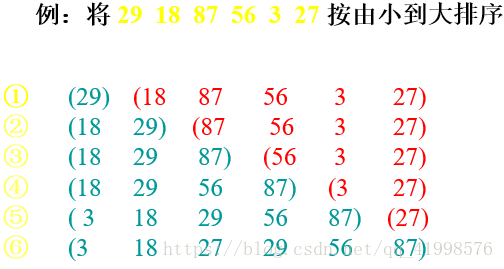

# 速记方法
插冒选希，快堆并基
| 排序方法 | 最好时间 | 平均时间 | 最坏时间 | 辅助存储 | 稳定性 | 备注 |
|---|---|---|---|---|---|---|
| 插入排序 | O(n) | O(n^2) | O(n^2) | O(1) | 稳定 | |
| 冒泡排序 | O(n) | O(n^2) | O(n^2) | O(1) | 稳定 | |
| 选择排序 | O(n^2) | O(n^2) | O(n^2) | O(1) | 不稳定 | |
| 希尔排序 | O(n^1.3) | O(nlogn) | O(n^2) | O(1) | 不稳定 | |
| 快速排序 | O(nlogn) | O(nlogn) | O(n^2) | O(logn) | 不稳定 | |
| 堆排序 | O(nlogn) | O(nlogn) | O(nlogn) | O(1) | 不稳定 | |
| 归并排序 | O(nlogn) | O(nlogn) | O(nlogn) | O(n) | 稳定 | |
| 基数排序 | O(kn) | O(kn) | O(kn) | O(n) | 稳定 |
从平均情况看：堆排序、归并排序、快速排序胜过希尔排序。
从最好情况看：冒泡排序和直接插入排序更胜一筹。
从最差情况看：堆排序和归并排序强过快速排序。
虽然直接插入排序和冒泡排序速度比较慢，但是当初始序列整体或局部有序是，这两种算法的效率比较高。
当初始序列整体或局部有序时，快速排序算法效率会下降。
当排序序列较小且不要求稳定性是，直接排序效率较好；要求稳定性时，冒泡排序法效率较好。
# 插入排序


方法：对于给定的一组记录，初始时假定第一个记录自成一个有序的序列，其余的记录为无序序列；接着从第二个记录开始，按照记录的大小依次将当前处理的记录插入到其之前的有序序列中，直至最后一个记录插入到有序序列为止。
- 第一层循环：遍历待比较的所有数组元素
- 第二层循环：将本轮选择的元素 (selected) 与已经排好序的元素 (ordered) 相比较。
如果：selected > ordered，那么将二者交换
01.insertion_sort.c：
#include <stdio.h> | |
/** | |
* 宏 功能 | |
* ’#‘ 字符串化 | |
* ‘##’ 字符连接的功能 | |
* "__VA_ARGS__’ 这个可变参数的宏是新的 C99 规范中新增的，和变参函数中的... 一致 | |
* ‘##__VA_ARGS__’ 宏前面加上 ## 的作用在于，当可变参数的个数为 0 时，这里的 ## 起到把前面多余的 "," 去掉的作用，否则会编译出错 | |
*/ | |
#define PRINT(fmt, ...) \ | |
printf(fmt, ##__VA_ARGS__) | |
#define PRINT1(...) \ | |
printf(__VA_ARGS__) | |
// 在 C 语言中是不存在引用的，也就是说 C 语言中 & amp; 表示的不是引用，而是取地址符 | |
// 用指针来取代引用，在函数中传进来地址，或者可以将代码扩展名保存成.cpp 文件 | |
void insertion_sort(int array[], int length) | |
{ | |
int temp, i, j; | |
for (i = 0; i < length; i++) | |
{ | |
temp = array[i]; // 当前要插入的元素，前面 [i - 1] 个元素已排序好，拿出来第 [i] 位出元素，前面元素可以后移一位覆盖此第 [i] 处元素 | |
for (j = i - 1; j >= 0; j--) // 与其它已排序过的元素从大到小比较，原因是数组元素后移方便 | |
{ | |
if (temp < array[j]) // 如果当前要插入的元素小于已排序好的元素. | |
{ | |
array[j + 1] = array[j];// 将已排序好的元素后移. | |
} | |
else | |
{ | |
break; // 如果当前要插入的元素大于已排序好的元素 array [j] 则跳出. | |
} | |
} | |
array[j + 1] = temp; // 将要插入的元素放到当前比较到的位置处 array [j + 1]. | |
} | |
} | |
int main() | |
{ | |
int array[] = {29, 18, 87, 56, 3, 27, 9, 63, 39}; | |
int length = sizeof(array) / sizeof(array[0]); | |
insertion_sort(array, length); | |
int i = 0; | |
PRINT("%s-(%d), %s \n",__FILE__, __LINE__, __FUNCTION__); | |
for (i = 0; i < length; i++) | |
{ | |
PRINT("%d ", array[i]); | |
} | |
PRINT("\n"); | |
return 0; | |
} |
Makefile：
insertion_sort: 01.insertion_sort.c
gcc -g 01.insertion_sort.c -o 01.insertion_sort.o
clean:
rm -rf *.o
编译：
// 编译 | |
make insertion_sort | |
// 执行 | |
./01.insertion_sort.o | |
// 清理 | |
make clean |